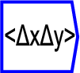
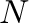
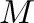
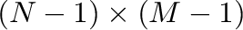
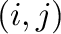
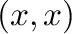
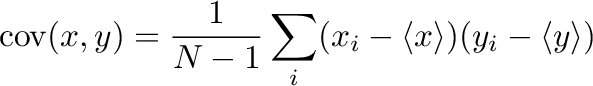

The operator can be placed on the canvas in two ways:
 ;
or
;
or
Computes the covariance of two tensors along named dimension. If the inputs are of rank

and
respectively, the output will be a
rank tensor, where the
element is the covariance of the -th slice of the first argument along the named
dimension, and the
-th slice of the first argument along the named
dimension, and the  -th slice along the named dimension. As such,
it is conformant with the definition of cov function in Octave,
but not with the equivalently named function in Matlab:
quoteCompatibility Note:: Octave always treats rows of X and Y as multivariate
random variables. For two inputs, however, MATLAB treats X and Y as
two univariate distributions regardless of their shapes, and will
calculate covariance whenever the number of elements in X and Y are
equal. This will result in a 2x2 matrix. Code relying on MATLAB's
definition will need to be changed when running in Octave.
If only a single argument
-th slice along the named dimension. As such,
it is conformant with the definition of cov function in Octave,
but not with the equivalently named function in Matlab:
quoteCompatibility Note:: Octave always treats rows of X and Y as multivariate
random variables. For two inputs, however, MATLAB treats X and Y as
two univariate distributions regardless of their shapes, and will
calculate covariance whenever the number of elements in X and Y are
equal. This will result in a 2x2 matrix. Code relying on MATLAB's
definition will need to be changed when running in Octave.
If only a single argument  is supplied to the covariance, then
the result is equivalent to cov
is supplied to the covariance, then
the result is equivalent to cov
, ie each slice is covaried with each other slice.
The formula for covariance between stochastic variables and  is
is
